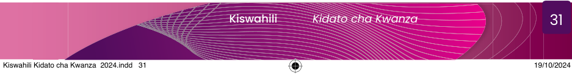

Shughuli ya 2.6
 1.
1.
(a) Tumia vyanzo vya mkondoni vinavyoaminika au tembelea maktaba iliyopo shuleni kwako au inayopatikana karibu na mazingira yako, kisha soma matini anuai zilizoandikwa kwa lugha ya Kiswahili.
(b) Kutokana na matini uliyoisoma katika shughuli ya 2.6 (1 a), teua sentensi kumi (10), kisha bainisha uhusiano wa maneno yanayofuatana katika sentensi hizo.
2. Andika hadithi fupi kwa kuzingatia mpangilio sahihi wa maneno katika sentensi.
Zoezi la 2.4
1. Tunga sentensi zenye muundo ufuatao:
(a) N U N T N
(b) N V t N
(c) N T N U N
2. Panga maneno yafuatayo ili yaweze kujenga sentensi zenye maana.
(a) Mengi na nyingi wamepata mwaka fedha kutokana kupata mavuno huu wakulima.
(b) Afya bora ya yetu miili ni kwa ajili ya chakula.
(c) Ni Tanzania nchi sana nzuri.
Kuandika hadithi kwa kuzingatia uhusiano wa sentensi katika aya

Soma kifungu cha habari kifuatacho, kisha jibu maswali yanayofuata.
Siku moja jioni baada ya saa za shule, Masanja alikuwa anaangalia televisheni.
Mama yake alitaka aende kuteka maji mtoni.
Masanja alimwomba mama yake amalizie kusikiliza kipindi kilichokuwa kinarushwa ndipo akateke maji.
Mazungumzo ya Masanja na mama yake yalikuwa kama ifuatavyo:
